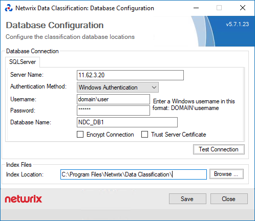

Question
How can you migrate the Data Classification database?
Answer
NOTE: In Data Classification version 5.6 and earlier, refer to the following paths:
C:\Program Files\ConceptSearching\Services\ConceptCollectorService\conceptConfig.exe C:\inetpub\wwwroot\conceptQS\bin\conceptConfig.exe C:\Program Files\ConceptSearching\Services\conceptIndexer\conceptConfig.exe C:\inetpub\wwwroot\conceptQS\bin\conceptConfig.exe
Follow these steps to migrate the Data Classification database:
-
Open the Service Viewer and stop all three Data Classification services. The default path is:
C:\Program Files\Netwrix\Data Classification\ServiceViewerNOTE: In a DQS environment, stop the Data Classification services on all Data Classification servers.
-
Perform a full Data Classification database backup. For details about the backup process, see Create a Full Database Backup ⸱ Microsoft 🡥.
-
Restore the Data Classification database file from the device to the target SQL Server. For more information, see Restore a Database Backup Using SSMS ⸱ Microsoft 🡥.
-
Go to the following folder to update the Data Classification configuration:
C:\inetpub\wwwroot\NDC\bin\conceptConfig.exeReview the server name and the credentials of the database account. The database name should remain the same unless you changed it during the migration process.
NOTE: In a DQS environment, apply the changes on each Data Classification server in the DQS cluster.
IMPORTANT: If you are using the Windows Authentication method, verify that the user has the db_owner role assigned in the Data Classification database. Alternatively, run
conceptConfig.exeusing the service account. -
Open the Service Viewer and start all three Data Classification services. The default path is:
C:\Program Files\Netwrix\Data Classification\ServiceViewerNOTE: In a DQS environment, start the Data Classification services on all Data Classification servers.